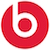
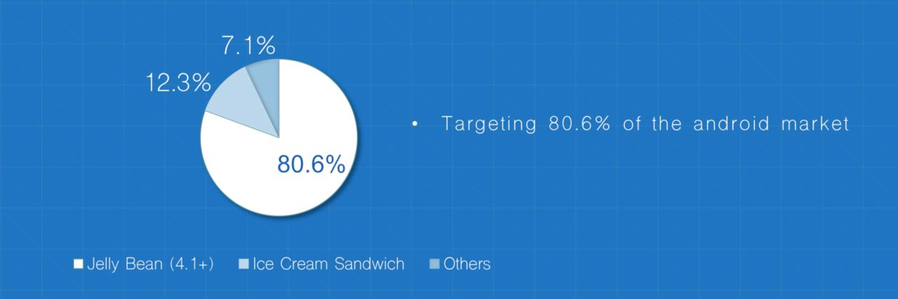
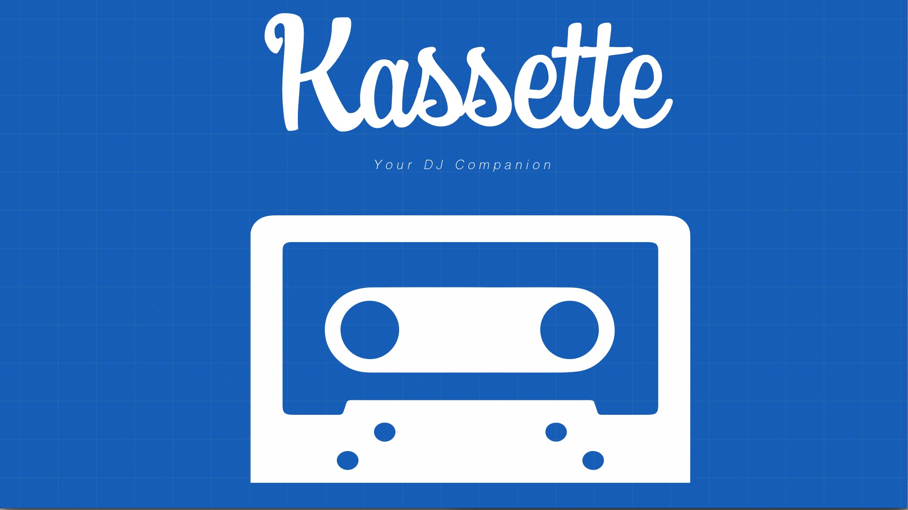
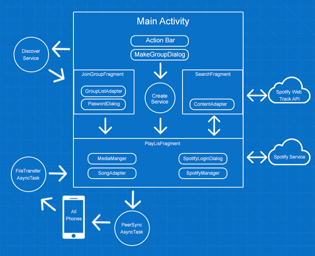

# Marketing Plan --- ### Introduction Road trips with friends are pretty much synonymous with loud music and singing along. But theres just one problem, you realize your friends have terrible taste in music and you want to play your music instead. Problem is you can only connect one device at a time to play music, whether it be via auxiliary cord or bluetooth. Yes, you can disconnect the auxiliary cord and pass it around, but theres no guarantees it will reach you in the back seat and setting up bluetooth can only be done when the car is parked. Solution, Kassette is an Android App that allows you to push your music directly to the phone that is connected to the car so you don't have to go through the hassle of passing the auxiliary cord or setting up bluetooth. Essentially this is done by having the phone connected to the car to set up a “Group,” then you and everyone else in the car can push songs you want to listen to next, like a shared playlist. In addition, users also have the ability to down vote the current song being played. If a majority vote is reached, then the song is skipped. Lastly, Kassette can also be used at party’s, road trips, barbecues, or small get together among friends to enhance any social gatherings. --- ### Mission Statement Kassette - Your DJ companion. Kassette aims to simply sharing songs and allowing multiple people to DJ rather than go through the trouble of listening to only one person's music. Our goal is to make social environments more enjoyable by allowing people to listen to songs they want. --- ###Demographics We want to target students both males and females from the ages 16 to 25 in the US. More specifically these students have social lives, but very little money. So typically their social lives involves doing things that cost little to nothing, meaning hanging out at someones house, chilling at your dorm room, just driving around, or on road trips. By focusing on students in this age range means that they are typically more tech savvy and willing to try a free app and are integrated into some type of social network like Facebook, Twitter, etc. So if they love an app, they are more willing to post it or share it on their social networks. --- ### Market Research #### Competition **Top 10 Competitors:** 1. Spotify 2. Beats Music 3. Google Play Music 4. JukeBox for Spotify 5. Jukebox 6. Songza 7. Pandora 8. RockBot 9. TouchTunes 10. Rhapsody **Competition Analysis:** Our top five competitors can be broken into two groups, direct and indirect: Our indirect competitors would be music streaming apps that can copy our concept, which include Spotify, Beats Music, and Google Play Music. Now, in terms of Spotify and Google Play Music, if you don't have the monthly paid subscription for either then you are not able to use the service (Google Play Music) on a mobile device or are subjected to a random selection of songs that is out of your control (Spotify). With Beats Music there is no monthly subscription, but you are limited in your music selection. Our direct competitors are apps that have similar concepts like JukeBox and JukeBox for Spotify, but each have their own limitations. With the JukeBox app, one person all create a “JukeBox” and then you can select songs the “JukeBox” has to play. This means you are limited in the song selection and can’t push your own songs. Jukebox for Spotify is similar to the app I just talk about where a user can create a jukebox, but you select songs from the spotify library and play them. But the problem with this app is it requires GPS to used it, meaning you stationery to use it, so you can’t use it in a car. On top of that, both of the apps crash frequently. With Kassette we will strive to use the best of our competition, by binding local song pushing, like our direct competitor, and streaming music, like our indirect competitor, into one app. |Spotify|Google PlayMusic| Beats Music| Jukebox for Spotify | Jukebox |:-:|:-:|:-:|:-:|:-:| |  |  |  |  |    #### Market Info Our minimum target API os Jelly Bean due to the fact that our app uses WiFi direct. WiFi direct technology requires a chip that was not included in phones below Android 4.1. However, this won't pose a problem as research indicates that over 80% of the android Market consists of android version Jelly bean or higher. This is over 774 million devices Android devices.  --- ### Pricing / Business Pricing Strategies To monetize our app, we plan to use two approaches. First, we plan on releasing the app as a free version on the Google Play Store. This app will contain advertising to generate revenue, and gather the user's location data which will later be sold (more on this later). Then, there is going to be an alternate “PRO” version of the app which will contain absolutely no advertising but will still collect location data. In addition, the “PRO” version of the app will range from \$0.99 - \$1.99 on the Google Play Store. We plan on selling the “PRO” version at an initial cost of $1.99 and then gauge if reducing the app price would drive sales. Besides generating revenue from advertising and selling it on the Play Store the app will also passively collect background location information. This user data is valuable to a lot of online marketplaces such as Data Exchange, InfoChimp and AggData, HandShake, DataCoup. These online data warehousing companies broker deals with companies to buy user data. HandShake offers a pricing model of a flat $8 fee per month but this requires credit card information from the user. Since there is no way to acquire a figure on how much location data is worth to companies, we estimate that companies are willing to pay at least a hundredth of what they are willing to pay for a user’s personal location. We use this modest projection of \$0.08 per KB of data to estimate revenue generated annually. On average Americans drive 15,291 miles per year. This is around 244 hours spent on driving annually. We use an estimate that on average users only spend only around a fraction of this time on a road trip, around eight hours. Eight hours of collection location data can generate up to 1.5KB of bankable data. Now, we project having at least 15,000 downloads on our apps as apps similar to this idea like “Jukebox” and “Jukebox for Spotify” have similar install rates. Assuming only 10,000 people use the app actively every year for 8 hours, generating 10KB of data annually and that we can broker a deal to sell this data at \$0.08, our revenue from location data alone will amount to $8,000 per year. Additionally our app will also be sold on the app store. We estimate that only around 2% of the users will buy the app. This will account for \$200 in sales and after the google fee, we will make around \$140 on the app annually. On the free app side, We use the figures from Forbes of \$0.18 generated from ads and for 98% of our remaining user base of 10,000 active users, we estimate that we will make around \$1800. In total, we project our first year revenue of $9,940. #### **Revenue Table** | Year | Downloads| Revenue | |:----:|----------:|------------:| | 1 | 15,000| \$10,000 |2|25,000 | \$18,000 |3|40,000 | \$29,000 |4|60,000 | \$42,000 --- ### Production Cost Kassette was developed by a three member team. Doing an analysis of the commits per week, and the amount of code pushed by the team members, we estimated that we worked on Kassette at least 33 hours per week (11 hours per team member). An additional 15 hours were added for research for the following reasons. Our team project manager, Mohammed Islam, spent a considerable amount of time looking into WiFi-Direct technology and using it on Android. Mohammed had previous android experience and was able to get up and running developing the app a lot faster than the other two team members, Saurabh and Ali. Saurabh and Ali spent a lot of time researching into fragments, and learning the Android API. So with this we tally a total of hours per week that we worked on the app. Development of the app by Mohammed started earlier in week 5, where as development by Saurabh and did not start until Week 6. Therefore, a grand total of 178 hours were put into the development of the code base. In addition to the hours above, we also spent time preparing for mock up presentations and creating this bussiness plan. We add a total of low estimate of 10 hours to that as the planning, brainstorming session, and presentation preps for Kassette were long. In order to calculate the time of value of each member, we used the amount they will be paid this summer for their internships and full-time work. For Mohammed Islam, he will be receiving \$37 an hour at SalesForce, Saurabh Sharma will be receiving \$54/hour for full-time work at Microsoft, and Ali Talpur will be receiving \$35/ hour at Sony Playstation. | Type | Saurabh Sharma | Mohammed Islam | Ali Talpur | X | |:------:|:---------------:|:--------------:|:----------:|:--:| | **Dev Time** | 44 (11 hours / 4 weeks) | 55 (11 hours / 5 weeks) | 44 (11 hours / 4 weeks) |x | | **Research Hours** | 15 | 20 | 10 |x | | **Total Hours** | 59 | 75 | 44 |x | | **Rate / Dev** | \$54 | \$37 | \$35 |x | | **Member Salaries** | \$3,186 | \$2,775 | \$1,890 |x | | x | x | x | **Grand Total** | \$7,851| --- ###Non-Production Cost There are many non-production costs to be considered, first of which is the website. The website Kassette.me is being hosted on github pages. Github pages allow us a permanent static website hosting page for free. However, hosting only static content is a limitation, and while we were able to bypass the sending an email for the contact us part by using MailGun, we will most likely need to move to our own host that allows for a backend in-order to store emails for the beta. This likely cost around \$30/year if we use a premium content host. Next recurring charge is the domain name. The current domain name Kassette.me costs us nothing to us because we used namecheap to get a domain name which is free for the first year to students. The domain name we want, Kassette.io, will cost around \$36 a year which we will need to buy as soon as possible. Another possible cost to consider in the near future is the cost of a Spotify premium developer API. If our app becomes popular, we may need to have Spotify authorize to use an enterprise level API which allows us to make more API calls. This is an unknown charge and won't likely be a problem so we will not consider this in our estimate. | Name | Cost | |:-|-:| |Domain Name| \$30 | |Domain Hosting| \$36 | | **Grand Total** | $66 --- ###Distribution The app is going to be distributed on the Google PlayStore starting this April. However, we currently are trying to recruit a fellow iOS developer to let us know the feasibility of releasing a similar app on iOS. The iOS platform imposes a lot of restrictions on what you can access and our initial research did not turn up any results. We are however hopeful that it will be possible to port the application onto iOS. --- ### Business Name / Branding The app started out with the name RoadTrip but we realized that the use case's of the app should not be limited to just road trips, so we decided to rebrand it. We sought advice from a close friend who is a professional designed and he recommended rebranding the whole app as Kassette. We have changed the icons, acquired the correct domain name and changed all pertinent information about our app to say Kassette. --- ### Advertising budget & schedule Our advertising strategy is very simple. We plan on using any capital we gain in any funding rounds into marketing. We do not plan on taking a salary, so any funding that comes in will be poured into advertising. We plan on spending 80% of any capital that we have on facebook ads. This strategy is very similar to that of a popular mobile app called Clash of Clans. They have had a lot of success with mobile facebook advertisements. Any remaining capital we intent to spend on Google AdWords.This has the advantage of being targeted to not only mobile users, but also on google search results and will allow us to bring in more users via the "shared music" organic search term. --- ### Summary In summary, We hope Kassette is a unique app, with nothing like it on the google PlayStore. The novelty of the app is that it is able to stream songs using WiFi direct, something that has never been done before. We believe a strong focus on mobile advertising will help bring the app to our young demographic and lead to our app being successful. We were very pessimistic with our revenue estimates and our app will most likely be a lot higher than reported above but the numbers above serve as a minimum base. Our rebranding from RoadTrip to Kassette should lead to a bigger target audience. #Launch Plan --- ### Launch press release #### Check out our press release at http://kassette.me/press-release/Kassette.pdf --- ### Web landing page #### http://kassette.me/  --- ### Social media blasts Dear Potential Users, I am writing to ask you to join me and other Kassette organization members to take control of your music. Have you ever had to deal with bad music at a social gathering, roadtrip, barbeque, or any other event? Most people probably answered yes to that if not than you're just very lucky or have friends with the exact same music taste as you. For everyone else there’s a solution to your problems. Kassette can help. Kassette is an application which allows users to push their local songs saved on their phones to a host song. For example, if you and your friends are going on a road trip together and your friend is playing songs from his phone via bluetooth or auxiliary cable and he plays a song no one likes in the car and doesn’t want to change it you can set up a group in Kassette and everyone can downvote the song. Furthermore, everyone has control over the music by using Kassette they all can push their local songs and songs via Spotify to the host phone and down vote and up vote the songs. For Spotify to work the host phone needs a premium Spotify account and everyone in the group can push songs by searching songs thru Spotify. This essentially allows everyone to be happy at any social gathering or road trip. We believe everyone should have control over their music so join us and other Kassette organization members and be part of the Kassette team. Sincerly, Kassette --- ### Advertising Full Page ad that we plan on posting on all social media and possibly on the UCSD Guardian  --- # Functional description The website was built using the bootstrap framework to build a responsive website. It is being hosted on Github so it can only use static HTML / CSS. This was a problem since we needed a contact page to be able to send us emails. So we used MailGun REST API which utilizes JSONP to send emails. The Android app was developed with Wi-Fi Direct technology, also know as Wi-Fi Peer-to-Peer, which allows Android 4.0 (API level 14) or later devices with the appropriate hardware to connect directly to each other via Wi-Fi without an intermediate access point. In conjunction with this, we use Service Discovery which allows you to discover the services of nearby devices directly, without being connected to a network. You can also advertise the services running on your device. These capabilities help you communicate between apps, even when no local network or hotspot is available. To use Service Discovery our min SDK has to be set to 4.1, api level 16. After setting up a service and connecting to a device with Wi-Fi Direct, we primary use server sockets to be able to transfer mp3 and jpeg files from peer phone to the group host phone at the speed of 3mbps. We also use server sockets to send custom object from phone to phone to keep all of the devices in sync and implement the down vote functionality. Lastly we had adaptability in mind when creating the app, so we used fragments to display our content while activity's rearrange the fragments depending on the size of the screen. Here is out UML Diagram  --- # Help Guide Check out our website (http://kassette.me/) for a tutorial on how to use the app and a video description of how it works. --- # Project Goals When we first started Kassette we wanted to give as much control to the user as we possibly could over their song selection in a group environment. We wanted to get rid of one person controlling all the music or passing the auxiliary cord around or switching bluetooth connection for someone else to play their music. We accomplished our projects objectives however, we need to implement an iOS version of the application and have communication working between iOS and android. We want the app to be able to work between both iOS and android users so not everyone will need an android phone to use Kassette. To finish our future project objectives we will need a lot of time and funding so we can advertise the application. Specifically we will need about $1000 dollars to invest in marketing and about 200 to 300 dollars to invest in getting more android devices so all of our team members will have at least 2 devices to work on. Every team member is happy with the work the other has done. Each individual has put in an incredible amount of effort to make Kassette a reality. We are all planning on continuing are work with Kassette and plan to go in business together. ### Plans for Version 2.0 For Kassette 2.0 we will be implementing google play music, rdio and we will need to change the UI since the app won’t be in beta anymore. We will get help from someone with design and UX experience to make the app look more polished. Rdio is an application similar to Spotify but has more social features than Spotify and focuses on friends and social media sharing their thoughts on music. Rdio also has more international users than Spotify. We want to implement rdio into Kassette and we hope to bring the international market to use Kassette with the implementation of rdio. Additionally, for our 2.0 features we want to optimize the up vote feature and use the upvote/downvote features to give users more control over the music being played. Furthermore, we will have an iOS version of the application and want Kassette to communicate between iOS and Android version so Kassette isn't for android users only. So users can chose to play their music via local storage, Spotify, Google Play, and rdio. --- # Team #### **Mohammed Islam - Project Manger** **Background:** Computer Science major focusing on Mobile Development. Worked previously on two Android projects, one is a navigational app for Rady Children's Hospital and the other is an smartphone app for a company called NetSapiens. For both projects my team tackled the project from an Agile point of view while using Behavior Driven Development as our main choice of testing. On both projects, I primarily focused on Frontend but also understood backend of Android. **Strength & Weakness:** Typically I am pretty bad at communicating when it comes to email or text because I often am not able to express what I want to say very smoothly or quickly, but I make up for this in my ability to explain complex ideas simply. Another thing is I am a bit slow or very confused when a problem arises, but I make up for this by really taking my time in understanding a problem especially when it comes to understanding a clients problems. Aside from that, I have been know to be easy to work with and I have been told that my work ethic inspires others to work harder. **Position:** Project Manager, because I have the most experience with Android on my team and will be able to effectively implement an Agile Development process. #### **Saurabh Sharma - Server Side Developer** **Background:** A fourth year Computer Science Major emphasizing in Graphics. He has worked on both front end and backend web development positions in the industry. I have a passion for writing clean, maintainable code through use of OO techniques and applying design patterns. I am self taught in several web related languages and frameworks with past work experience in web development and several independent projects. **Strengths & Weaknesses: ** I am vital to the group for my extensive API development experience which will be needed for the server backend of the application. I have worked on several Web applications and has several projects that consist of communicating between Android and Application APIs. **Position:** Server Side Developer because I am already really experienced in creating backend services for mobile apps, having previously done one during a hackathon. **Mir Ali Talpur - Android Backend Developer** **Background:** I am currently a senior majoring in Computer Science emphasizing on Networking and Security. I have strong experience in frontend and backend web development but I have only worked on one android application in a team of five individuals. My internships have taught me how to work with teams and organize my work and time. **Strengths & Weaknesses:** I have strong backend, networking experience and am great at communicating with the team. Furthermore, I am highly motivated to make mobile applications. I have recently been doing a lot of C++ and haven't worked with Java in a while and I am not that creative. **Position:** Backend Developer because I enjoy backend development and have previous experience in projects as a backend developer. --- # Bibliography (1) http://www.technologyreview.com/news/524621/sell-your-personal-data-for-8-a-month/ (2) http://cars.lovetoknow.com/about-cars/how-many-miles-do-americans-drive-per-year (3) https://play.google.com/store/apps/details?id=com.stylejukebox&hl=en (4) https://play.google.com/store/apps/details?id=com.qualcomm.qce.allplay.jukebox&hl=en (5) http://www.forbes.com/sites/tristanlouis/2013/08/10/how-much-do-average-apps-make/
Index
Marketing Plan
Introduction
Road trips with friends are pretty much synonymous with loud music and singing along. But theres just one problem, you realize your friends have terrible taste in music and you want to play your music instead. Problem is you can only connect one device at a time to play music, whether it be via auxiliary cord or bluetooth. Yes, you can disconnect the auxiliary cord and pass it around, but theres no guarantees it will reach you in the back seat and setting up bluetooth can only be done when the car is parked.
Solution, Kassette is an Android App that allows you to push your music directly to the phone that is connected to the car so you don’t have to go through the hassle of passing the auxiliary cord or setting up bluetooth. Essentially this is done by having the phone connected to the car to set up a “Group,” then you and everyone else in the car can push songs you want to listen to next, like a shared playlist. In addition, users also have the ability to down vote the current song being played. If a majority vote is reached, then the song is skipped. Lastly, Kassette can also be used at party’s, road trips, barbecues, or small get together among friends to enhance any social gatherings.
Mission Statement
Kassette - Your DJ companion.
Kassette aims to simply sharing songs and allowing multiple people to DJ rather than go through the trouble of listening to only one person’s music. Our goal is to make social environments more enjoyable by allowing people to listen to songs they want.
Demographics
We want to target students both males and females from the ages 16 to 25 in the US. More specifically these students have social lives, but very little money. So typically their social lives involves doing things that cost little to nothing, meaning hanging out at someones house, chilling at your dorm room, just driving around, or on road trips. By focusing on students in this age range means that they are typically more tech savvy and willing to try a free app and are integrated into some type of social network like Facebook, Twitter, etc. So if they love an app, they are more willing to post it or share it on their social networks.
Market Research
Competition
Top 10 Competitors:
- Spotify
- Beats Music
- Google Play Music
- JukeBox for Spotify
- Jukebox
- Songza
- Pandora
- RockBot
- TouchTunes
- Rhapsody
Competition Analysis:
Our top five competitors can be broken into two groups, direct and indirect:
Our indirect competitors would be music streaming apps that can copy our concept, which include Spotify, Beats Music, and Google Play Music. Now, in terms of Spotify and Google Play Music, if you don’t have the monthly paid subscription for either then you are not able to use the service (Google Play Music) on a mobile device or are subjected to a random selection of songs that is out of your control (Spotify). With Beats Music there is no monthly subscription, but you are limited in your music selection.
Our direct competitors are apps that have similar concepts like JukeBox and JukeBox for Spotify, but each have their own limitations. With the JukeBox app, one person all create a “JukeBox” and then you can select songs the “JukeBox” has to play. This means you are limited in the song selection and can’t push your own songs.
Jukebox for Spotify is similar to the app I just talk about where a user can create a jukebox, but you select songs from the spotify library and play them. But the problem with this app is it requires GPS to used it, meaning you stationery to use it, so you can’t use it in a car.
On top of that, both of the apps crash frequently.
With Kassette we will strive to use the best of our competition, by binding local song pushing, like our direct competitor, and streaming music, like our indirect competitor, into one app.
| Spotify | Google PlayMusic | Beats Music | Jukebox for Spotify | Jukebox |
|---|---|---|---|---|
|  |


Market Info
Our minimum target API os Jelly Bean due to the fact that our app uses WiFi direct. WiFi direct technology requires a chip that was not included in phones below Android 4.1. However, this won’t pose a problem as research indicates that over 80% of the android Market consists of android version Jelly bean or higher. This is over 774 million devices Android devices.

Pricing / Business Pricing Strategies
To monetize our app, we plan to use two approaches. First, we plan on releasing the app as a free version on the Google Play Store. This app will contain advertising to generate revenue, and gather the user’s location data which will later be sold (more on this later). Then, there is going to be an alternate “PRO” version of the app which will contain absolutely no advertising but will still collect location data. In addition, the “PRO” version of the app will range from $0.99 - $1.99 on the Google Play Store. We plan on selling the “PRO” version at an initial cost of $1.99 and then gauge if reducing the app price would drive sales.
Besides generating revenue from advertising and selling it on the Play Store the app will also passively collect background location information. This user data is valuable to a lot of online marketplaces such as Data Exchange, InfoChimp and AggData, HandShake, DataCoup. These online data warehousing companies broker deals with companies to buy user data. HandShake offers a pricing model of a flat $8 fee per month but this requires credit card information from the user. Since there is no way to acquire a figure on how much location data is worth to companies, we estimate that companies are willing to pay at least a hundredth of what they are willing to pay for a user’s personal location.
We use this modest projection of $0.08 per KB of data to estimate revenue generated annually. On average Americans drive 15,291 miles per year. This is around 244 hours spent on driving annually. We use an estimate that on average users only spend only around a fraction of this time on a road trip, around eight hours. Eight hours of collection location data can generate up to 1.5KB of bankable data. Now, we project having at least 15,000 downloads on our apps as apps similar to this idea like “Jukebox” and “Jukebox for Spotify” have similar install rates. Assuming only 10,000 people use the app actively every year for 8 hours, generating 10KB of data annually and that we can broker a deal to sell this data at $0.08, our revenue from location data alone will amount to $8,000 per year.
Additionally our app will also be sold on the app store. We estimate that only around 2% of the users will buy the app. This will account for $200 in sales and after the google fee, we will make around $140 on the app annually. On the free app side, We use the figures from Forbes of $0.18 generated from ads and for 98% of our remaining user base of 10,000 active users, we estimate that we will make around $1800. In total, we project our first year revenue of $9,940.
Revenue Table
| Year | Downloads | Revenue |
|---|---|---|
| 1 | 15,000 | $10,000 |
| 2 | 25,000 | $18,000 |
| 3 | 40,000 | $29,000 |
| 4 | 60,000 | $42,000 |
Production Cost
Kassette was developed by a three member team. Doing an analysis of the commits per week, and the amount of code pushed by the team members, we estimated that we worked on Kassette at least 33 hours per week (11 hours per team member). An additional 15 hours were added for research for the following reasons. Our team project manager, Mohammed Islam, spent a considerable amount of time looking into WiFi-Direct technology and using it on Android. Mohammed had previous android experience and was able to get up and running developing the app a lot faster than the other two team members, Saurabh and Ali. Saurabh and Ali spent a lot of time researching into fragments, and learning the Android API. So with this we tally a total of hours per week that we worked on the app. Development of the app by Mohammed started earlier in week 5, where as development by Saurabh and did not start until Week 6. Therefore, a grand total of 178 hours were put into the development of the code base.
In addition to the hours above, we also spent time preparing for mock up presentations and creating this bussiness plan. We add a total of low estimate of 10 hours to that as the planning, brainstorming session, and presentation preps for Kassette were long.
In order to calculate the time of value of each member, we used the amount they will be paid this summer for their internships and full-time work. For Mohammed Islam, he will be receiving $37 an hour at SalesForce, Saurabh Sharma will be receiving $54/hour for full-time work at Microsoft, and Ali Talpur will be receiving $35/ hour at Sony Playstation.
| Type | Saurabh Sharma | Mohammed Islam | Ali Talpur | X |
|---|---|---|---|---|
| Dev Time | 44 (11 hours / 4 weeks) | 55 (11 hours / 5 weeks) | 44 (11 hours / 4 weeks) | x |
| Research Hours | 15 | 20 | 10 | x |
| Total Hours | 59 | 75 | 44 | x |
| Rate / Dev | $54 | $37 | $35 | x |
| Member Salaries | $3,186 | $2,775 | $1,890 | x |
| x | x | x | Grand Total | $7,851 |
Non-Production Cost
There are many non-production costs to be considered, first of which is the website. The website Kassette.me is being hosted on github pages. Github pages allow us a permanent static website hosting page for free. However, hosting only static content is a limitation, and while we were able to bypass the sending an email for the contact us part by using MailGun, we will most likely need to move to our own host that allows for a backend in-order to store emails for the beta. This likely cost around $30/year if we use a premium content host.
Next recurring charge is the domain name. The current domain name Kassette.me costs us nothing to us because we used namecheap to get a domain name which is free for the first year to students. The domain name we want, Kassette.io, will cost around $36 a year which we will need to buy as soon as possible.
Another possible cost to consider in the near future is the cost of a Spotify premium developer API. If our app becomes popular, we may need to have Spotify authorize to use an enterprise level API which allows us to make more API calls. This is an unknown charge and won’t likely be a problem so we will not consider this in our estimate.
| Name | Cost |
|---|---|
| Domain Name | $30 |
| Domain Hosting | $36 |
| Grand Total | $66 |
Distribution
The app is going to be distributed on the Google PlayStore starting this April. However, we currently are trying to recruit a fellow iOS developer to let us know the feasibility of releasing a similar app on iOS. The iOS platform imposes a lot of restrictions on what you can access and our initial research did not turn up any results. We are however hopeful that it will be possible to port the application onto iOS.
Business Name / Branding
The app started out with the name RoadTrip but we realized that the use case’s of the app should not be limited to just road trips, so we decided to rebrand it. We sought advice from a close friend who is a professional designed and he recommended rebranding the whole app as Kassette. We have changed the icons, acquired the correct domain name and changed all pertinent information about our app to say Kassette.
Advertising budget & schedule
Our advertising strategy is very simple. We plan on using any capital we gain in any funding rounds into marketing. We do not plan on taking a salary, so any funding that comes in will be poured into advertising. We plan on spending 80% of any capital that we have on facebook ads. This strategy is very similar to that of a popular mobile app called Clash of Clans. They have had a lot of success with mobile facebook advertisements. Any remaining capital we intent to spend on Google AdWords.This has the advantage of being targeted to not only mobile users, but also on google search results and will allow us to bring in more users via the “shared music” organic search term.
Summary
In summary, We hope Kassette is a unique app, with nothing like it on the google PlayStore. The novelty of the app is that it is able to stream songs using WiFi direct, something that has never been done before. We believe a strong focus on mobile advertising will help bring the app to our young demographic and lead to our app being successful. We were very pessimistic with our revenue estimates and our app will most likely be a lot higher than reported above but the numbers above serve as a minimum base. Our rebranding from RoadTrip to Kassette should lead to a bigger target audience.
Launch Plan
Launch press release
Check out our press release at http://kassette.me/press-release/Kassette.pdf
Web landing page
Social media blasts
Dear Potential Users,
I am writing to ask you to join me and other Kassette organization members to take control of your music. Have you ever had to deal with bad music at a social gathering, roadtrip, barbeque, or any other event? Most people probably answered yes to that if not than you’re just very lucky or have friends with the exact same music taste as you. For everyone else there’s a solution to your problems.
Kassette can help. Kassette is an application which allows users to push their local songs saved on their phones to a host song. For example, if you and your friends are going on a road trip together and your friend is playing songs from his phone via bluetooth or auxiliary cable and he plays a song no one likes in the car and doesn’t want to change it you can set up a group in Kassette and everyone can downvote the song. Furthermore, everyone has control over the music by using Kassette they all can push their local songs and songs via Spotify to the host phone and down vote and up vote the songs. For Spotify to work the host phone needs a premium Spotify account and everyone in the group can push songs by searching songs thru Spotify. This essentially allows everyone to be happy at any social gathering or road trip.
We believe everyone should have control over their music so join us and other Kassette organization members and be part of the Kassette team.
Sincerly,
Kassette
Advertising
Full Page ad that we plan on posting on all social media and possibly on the UCSD Guardian

Functional description
The website was built using the bootstrap framework to build a responsive website. It is being hosted on Github so it can only use static HTML / CSS. This was a problem since we needed a contact page to be able to send us emails. So we used MailGun REST API which utilizes JSONP to send emails.
The Android app was developed with Wi-Fi Direct technology, also know as Wi-Fi Peer-to-Peer, which allows Android 4.0 (API level 14) or later devices with the appropriate hardware to connect directly to each other via Wi-Fi without an intermediate access point.
In conjunction with this, we use Service Discovery which allows you to discover the services of nearby devices directly, without being connected to a network. You can also advertise the services running on your device. These capabilities help you communicate between apps, even when no local network or hotspot is available. To use Service Discovery our min SDK has to be set to 4.1, api level 16.
After setting up a service and connecting to a device with Wi-Fi Direct, we primary use server sockets to be able to transfer mp3 and jpeg files from peer phone to the group host phone at the speed of 3mbps. We also use server sockets to send custom object from phone to phone to keep all of the devices in sync and implement the down vote functionality.
Lastly we had adaptability in mind when creating the app, so we used fragments to display our content while activity’s rearrange the fragments depending on the size of the screen.
Here is out UML Diagram

Help Guide
Check out our website (http://kassette.me/) for a tutorial on how to use the app and a video description of how it works.
Project Goals
When we first started Kassette we wanted to give as much control to the user as we possibly could over their song selection in a group environment. We wanted to get rid of one person controlling all the music or passing the auxiliary cord around or switching bluetooth connection for someone else to play their music. We accomplished our projects objectives however, we need to implement an iOS version of the application and have communication working between iOS and android. We want the app to be able to work between both iOS and android users so not everyone will need an android phone to use Kassette. To finish our future project objectives we will need a lot of time and funding so we can advertise the application. Specifically we will need about $1000 dollars to invest in marketing and about 200 to 300 dollars to invest in getting more android devices so all of our team members will have at least 2 devices to work on.
Every team member is happy with the work the other has done. Each individual has put in an incredible amount of effort to make Kassette a reality. We are all planning on continuing are work with Kassette and plan to go in business together.
Plans for Version 2.0
For Kassette 2.0 we will be implementing google play music, rdio and we will need to change the UI since the app won’t be in beta anymore. We will get help from someone with design and UX experience to make the app look more polished. Rdio is an application similar to Spotify but has more social features than Spotify and focuses on friends and social media sharing their thoughts on music. Rdio also has more international users than Spotify. We want to implement rdio into Kassette and we hope to bring the international market to use Kassette with the implementation of rdio.
Additionally, for our 2.0 features we want to optimize the up vote feature and use the upvote/downvote features to give users more control over the music being played. Furthermore, we will have an iOS version of the application and want Kassette to communicate between iOS and Android version so Kassette isn’t for android users only. So users can chose to play their music via local storage, Spotify, Google Play, and rdio.
Team
Mohammed Islam - Project Manger
Background: Computer Science major focusing on Mobile Development. Worked previously on two Android projects, one is a navigational app for Rady Children’s Hospital and the other is an smartphone app for a company called NetSapiens. For both projects my team tackled the project from an Agile point of view while using Behavior Driven Development as our main choice of testing. On both projects, I primarily focused on Frontend but also understood backend of Android.
Strength & Weakness: Typically I am pretty bad at communicating when it comes to email or text because I often am not able to express what I want to say very smoothly or quickly, but I make up for this in my ability to explain complex ideas simply. Another thing is I am a bit slow or very confused when a problem arises, but I make up for this by really taking my time in understanding a problem especially when it comes to understanding a clients problems.
Aside from that, I have been know to be easy to work with and I have been told that my work ethic inspires others to work harder.
Position: Project Manager, because I have the most experience with Android on my team and will be able to effectively implement an Agile Development process.
Saurabh Sharma - Server Side Developer
Background: A fourth year Computer Science Major emphasizing in Graphics. He has worked on both front end and backend web development positions in the industry. I have a passion for writing clean, maintainable code through use of OO techniques and applying design patterns. I am self taught in several web related languages and frameworks with past work experience in web development and several independent projects.
Strengths & Weaknesses: I am vital to the group for my extensive API development experience which will be needed for the server backend of the application. I have worked on several Web applications and has several projects that consist of communicating between Android and Application APIs.
Position: Server Side Developer because I am already really experienced in creating backend services for mobile apps, having previously done one during a hackathon.
Mir Ali Talpur - Android Backend Developer
Background: I am currently a senior majoring in Computer Science emphasizing on Networking and Security. I have strong experience in frontend and backend web development but I have only worked on one android application in a team of five individuals. My internships have taught me how to work with teams and organize my work and time.
Strengths & Weaknesses: I have strong backend, networking experience and am great at communicating with the team. Furthermore, I am highly motivated to make mobile applications. I have recently been doing a lot of C++ and haven’t worked with Java in a while and I am not that creative.
Position: Backend Developer because I enjoy backend development and have previous experience in projects as a backend developer.
Bibliography
(1) http://www.technologyreview.com/news/524621/sell-your-personal-data-for-8-a-month/
(2) http://cars.lovetoknow.com/about-cars/how-many-miles-do-americans-drive-per-year
(3) https://play.google.com/store/apps/details?id=com.stylejukebox&hl=en
(4) https://play.google.com/store/apps/details?id=com.qualcomm.qce.allplay.jukebox&hl=en
(5) http://www.forbes.com/sites/tristanlouis/2013/08/10/how-much-do-average-apps-make/